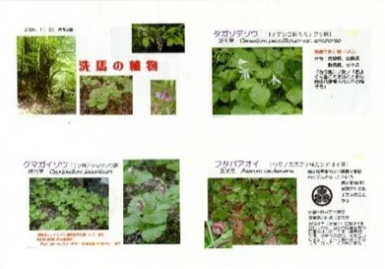

すがた部会では、昨年11月に元塩尻市自然博物館館長の野溝美憲氏をお招きし、自然学習会を開きました。野溝さんは頻繁に小曽部谷などを訪れ、貴重な植物・昆虫・キノコなどを記録にとどめています。
植物では洗馬に548種類もあり、学習会ではそれらを紹介して頂きました。この豊かな自然に満ちた洗馬を地区誌で残して行きたいと思います。

洗馬の豊かな自然を調査・記録するすがた部会が、元塩尻市自然博物館館長・野溝美憲氏をお招きし、自然学習会を開催しました。植物・昆虫・キノコなど、洗馬の多彩な自然の姿を学びます。
すがた部会では、昨年11月に元塩尻市自然博物館館長の野溝美憲氏をお招きし、自然学習会を開きました。野溝さんは頻繁に小曽部谷などを訪れ、貴重な植物・昆虫・キノコなどを記録にとどめています。
植物では洗馬に548種類もあり、学習会ではそれらを紹介して頂きました。この豊かな自然に満ちた洗馬を地区誌で残して行きたいと思います。
野溝美憲氏（元塩尻市自然博物館館長）

洗馬の植物（13ページ綴り）
今後の概日程
| 令和8年度 | 見積もり、補助金申請、原稿執筆 |
|---|---|
| 令和9年度 | 編集委員会内部校正 |
| 令和10年度 | 出版社への原稿出し、出版（年度末） |